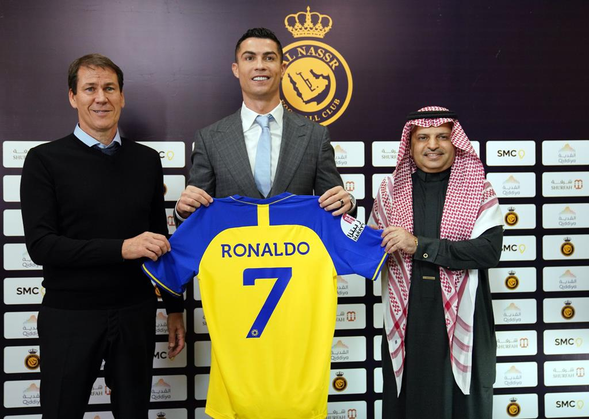
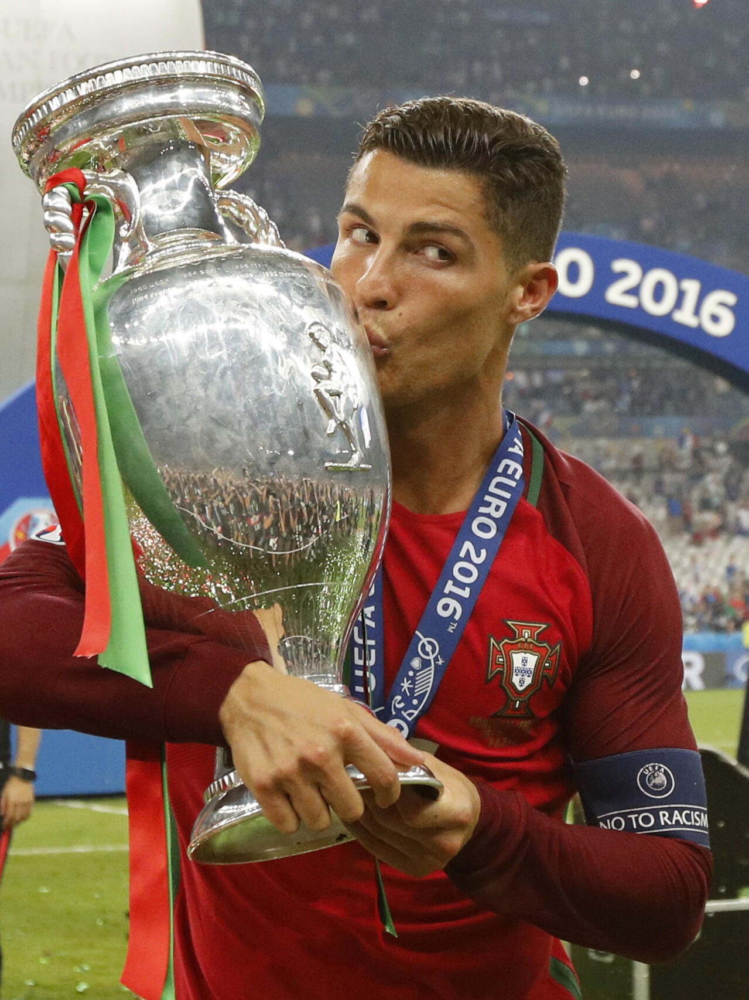
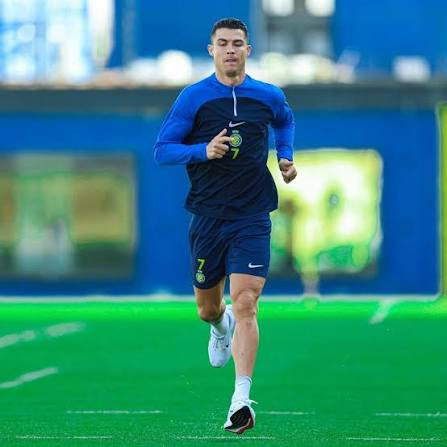

Cristiano Ronaldo #7
Avançado / Extremo • Al-Nassr FC & Seleção Nacional de Portugal
Estatísticas Gerais de Carreira
Dados consolidados e verificados ao longo da carreira profissional.
Histórico de Percurso & Épocas (Clique para expandir)
Clica em cada etapa para ver estatísticas detalhadas, conquistas e destaques.
Al-Nassr FC (Arábia Saudita)
Líder e capitão de equipa. Melhor marcador da Liga Saudita e vencedor da Arab Club Champions Cup.
- 🏆 Arab Club Champions Cup (2023)
- 🥇 Melhor Marcador da Liga Saudita (2023/24)
Manchester United FC (Inglaterra)
Regresso a Old Trafford. Eleito Jogador do Ano do Manchester United na época 2021/22 e incluído na Equipa do Ano da Premier League.
Juventus FC (Itália)
Domínio no futebol italiano tornando-se o jogador mais rápido na história da Juventus a atingir os 100 golos oficiais.
- 🏆 2x Serie A (2018/19, 2019/20)
- 🏆 1x Coppa Italia (2020/21)
- 🏆 2x Supercoppa Italiana (2018, 2020)
Real Madrid CF (Espanha)
Período lendário. Tornou-se o maior marcador de sempre do clube com uma média superior a 1 golo por jogo.
- 🏆 4x UEFA Champions League (2014, 2016, 2017, 2018)
- 🏆 2x La Liga (2011/12, 2016/17)
- 🥇 4x Bola de Ouro no clube (2013, 2014, 2016, 2017)
Manchester United FC (Inglaterra)
Afirmação como o melhor jogador do mundo sob o comando de Sir Alex Ferguson.
- 🏆 1x UEFA Champions League (2008)
- 🏆 3x Premier League (2007, 2008, 2009)
- 🥇 1ª Bola de Ouro (2008)
Sporting CP (Portugal)
Formação na Academia de Alcochete. Único jogador na história do clube a jogar nos Sub-16, Sub-17, Sub-18, Equipa B e Equipa Principal numa única época.
Notícias & Imprensa
Artigos, entrevistas e destaques publicados em órgãos de comunicação social.
Cristiano Ronaldo atinge marca histórica de golos na carreira
O capitão da seleção portuguesa continua a somar registos assombrosos e bate mais um recorde mundial.
O legado inigualável de Ronaldo na Liga dos Campeões
Uma análise detalhada aos números e momentos decisivos do maior marcador da história da Champions.
Homenagem da Federação pelos 200+ jogos pela Seleção Nacional
Momento solene de reconhecimento pela dedicação e liderança ao serviço de Portugal.
Galeria de Fotos (Destaques)
Momentos de jogos, conquistas e estágios de treino (máximo de 10 fotos selecionadas).



Galeria de Highlights & Vídeos
Coleção de vídeos do YouTube com os melhores golos, momentos e momentos marcantes.
Melhores Golos & Skills
Golos Memoráveis pela Seleção
Melhores Momentos no Real Madrid
Treinos & Preparação Física
Também queres o teu Sports Passport verificado?
Junta-te à rede XTalentID e cria a tua identidade digital no desporto.
Criar o meu XTalentID